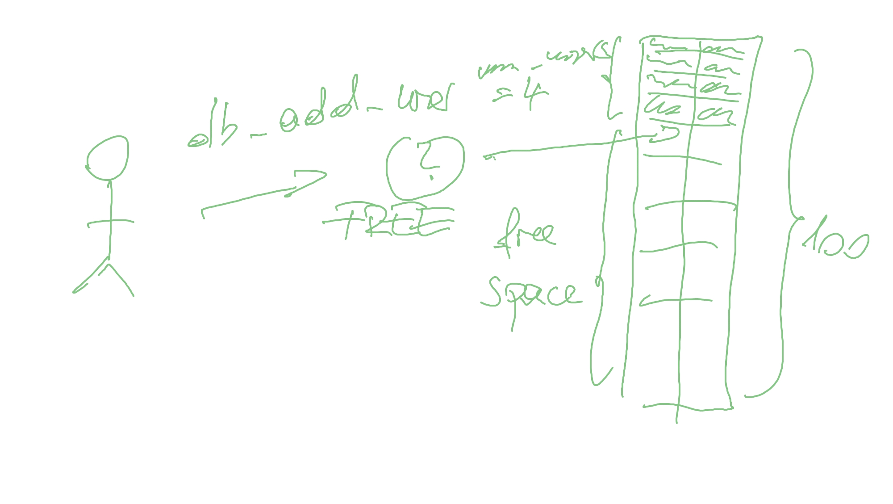

Programmieren mit C (2021-06-14 - 2021-06-18)¶
Log¶
Day 1¶
Day 2¶
State machine¶
It turns out that the correct solution to exercise on slide 37 of
the slide deck is a
state machine. It enables us to correctly cover all corner cases
(e.g. multiple consecutive spaces between two words) …
{kind=link}
wc.c became a state machine, implementing the above state chart. Using
if-then-elseto cover the states.Introduced the
switchstatement (slightly :-) deviating from the regular course flow); changed the state maching to use that instead ofif-then-else. See wc-switch.c
Regular Course Topics¶
Introduced pre and post increment operators (again severely deviating). See pre-post-increment.c.
Ah, arrays: leading to the “histogram” exercise (slide 41 from the
slides). Solution see here on GithubFunctions. Slides 44ff. from the
slides(thepower()function from the K&R book) as a live hacking gig. See here on Github.Quick
CMakeintro, as a preparation for the upcoming group project. Confusing people.
Day 3¶
Development Tools (Git & CMake) Installation Massacre¶
Git. See here for instructions about how to use Git with VS Code. It turns out that
Git Extension Pack guides users through workflows pretty well. Staging, commits, merges.
Except that we appear to have problems with Github authentication, which is why we use Github Desktop for remote stuff like clone, push, pull.
CMake. Doze installation; use the MSI (the installer package).
Regular Course Material¶
Fast run-through: slides 64-75
Stop at enums/76: morph wc.c state machine into a perfect enum candidate. This is the time to …
Show how to use
enumin the state machine from above.Enable
-Wswitch-enum(nowadays included in-Wall, apparently) CMakeLists.txtShow how
default:-lessswitchstatements,enum``s, and ``-Wswitch-enumcan work together and help me maintain code better.
Program see here.
“Variable Definitions” section. Slides 77ff. Emphasize on local variables (this is what we saw so far) more. Lifetime, initialization, etc.
Almost skip 81-88. Operators, boring.
Hard stop at “Type Conversions”, slides 89ff. Make people run away screaming (intentionally).
Group Project Kick-Off :-)¶
Kick off “group project”. Git, CMake, and team development, with rather artificial use cases. But anyway, these are use cases. See here.
Exercise: in the group-project/ directory,
Build a program that uses declarations from
db.h, toIterate over what is in the user database ⟶
userdbalongsidenum_users, external variables.Write CSV output.
Add build instructions to
group-project/CMakeLists.txt.When done, commit and push to Github.
Day 4¶
Regular Course Material¶
Repeat
external, local vs. global variables, visibilityPointers: 199ff from the
slides. Address space and pointers:Pointers: slide 203, “More Examples”: pointers.c
Slide 204ff, “Pointers as Function Parameters”: pointers-as-function-parameters.c
Slide 208ff, “Pointers and Arrays”: pointer-arrays-arithmetic.c
Slide 220ff, “Commandline”: pointers-argv.c
C++: STL, Iterators, and their relation to pointer arithmetic. pointer-array-in-c++.cpp.
structchapter, slides 222ffLive-hack the
struct pointstory from the slides. Show how an API could look like. point.c.
{kind=link}
{kind=link}
Exercise: Encapsulate Index Access to userdb¶
In your CSV export programs, replace the direct index access to
userdbwith the API functiondb_get_user_at_index()fromdb.h.userdbmust not be seen anymore in any user code.
{kind=link}
Group Project (Use Case Driven Course Flow :-) )¶
Hide implementation details: use
staticfor theuserdbarray. (More on slides 298ff.)Add user record to DB. Have to use
strcpy(). Here a sketch of the internal “organisation”.
{kind=link}
Day 5¶
Pointer Recap¶
strlen(). Man pagestrcpy(). Man page.Here is how to produce undefined bahavior by allocating too less space for the target string.
#include <string.h> #include <stdio.h> int main(void) { char src[] = "abc"; char dest[2]; // far too less, should be at least 4! strcpy(dest, src); printf("src: %s, dest: %s\n", src, dest); return 0; }Pointer massacre:
strtol(). Man page.Live hacking example: str-to-int-conversion.c
{kind=link}
{kind=link}
{kind=link}
On With Group Project¶
Show how error codes can be implemented
Error code definition using an
enum. db.h,enum Error.Error code stringification,
db_error_string().db.h, declaration.
db.c, definition. Note how we are using a
default-lessswitchstatement, together with-Wall(implicitly enabling-Wswitch-enum) in the toplevel CMakeLists.txt.
Valgrind. Here’s a YouTube Video on it.
File IO: binary vs. text. Here’s a YouTube Video on it.
CMake: show how you build and use libraries. group-project/CMakeLists.txt.
Further Information¶
Here’s some literature :-) to study as a preparation for our upcoming C++ course. Unfortunately, there are no absolute high-quality tutorial videos out there - one reason might be that those languages are not as sexy anymore as, for example, Python (where you can pick your favorites from a large pool of high quality material).
Pointers, Pointer Arithmetic, and the Standard Template Library (STL)¶
Pointer Arithmetic. Pointer Arithmetic in C; good to understand before going into C++ containers and iterators.
STL Containers - Learn Modern C++. A somewhat boring but comprehensive overview of available C++/STL datastructures and their runtime behaviour.